Screenshot Title
Screenshot description structural copy text.
Django Web Application
A secure, role-based web application designed to digitize academic tracking, eliminate paper logs, automate percentage constraints, and drop administrative overhead.
Traditional paper registers are slow, error-prone, and introduce operational delays. This Django-powered framework completely digitizes institutional attendance routines—providing fast tracking, real-time metrics calculation, and secure database storage.
Equipped with automated PDF report creation, multi-tier user logins, and conditional email alerts when attendance rates slip below required criteria, the application optimizes administrative reliability.
The system administrator manages institutional infrastructure, handles organizational entities, assigns cross-functional tasks to instructors, and evaluates analytical trends.
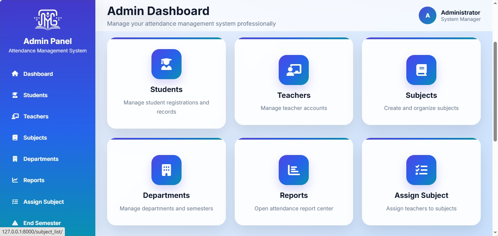
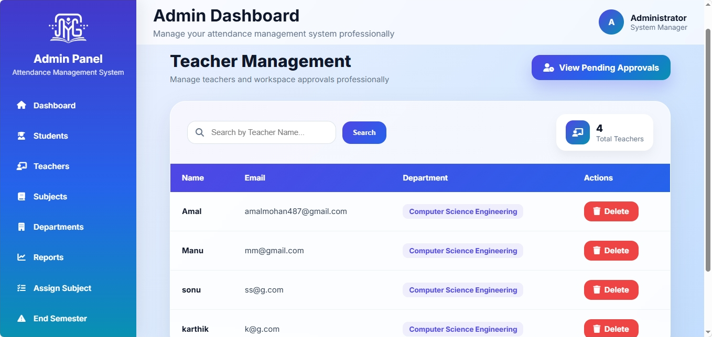
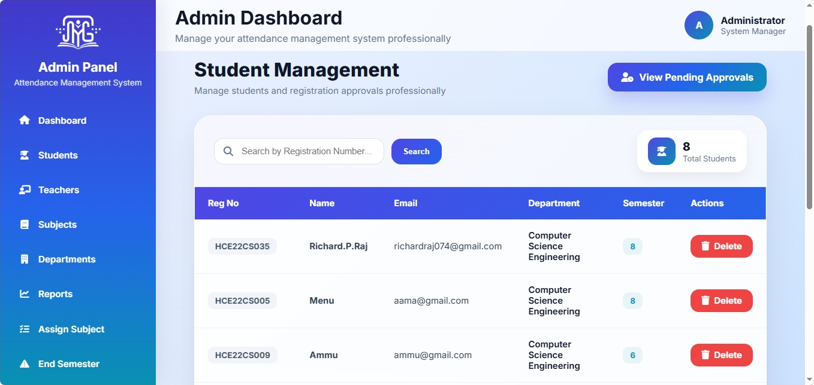
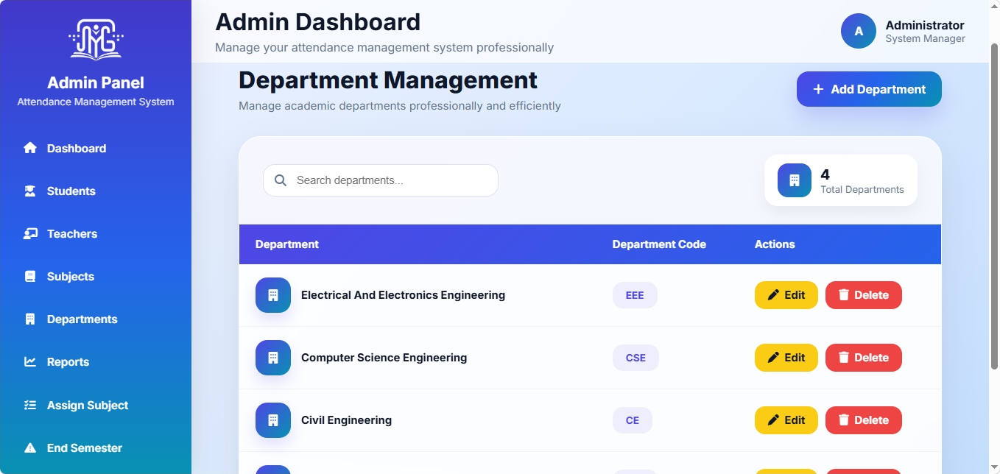
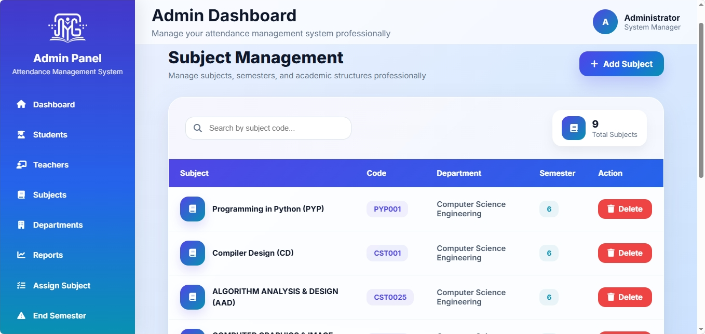
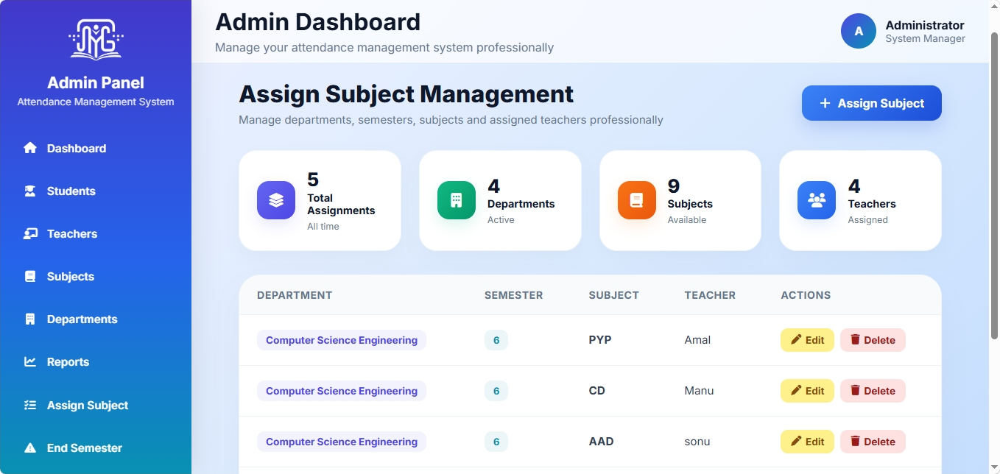
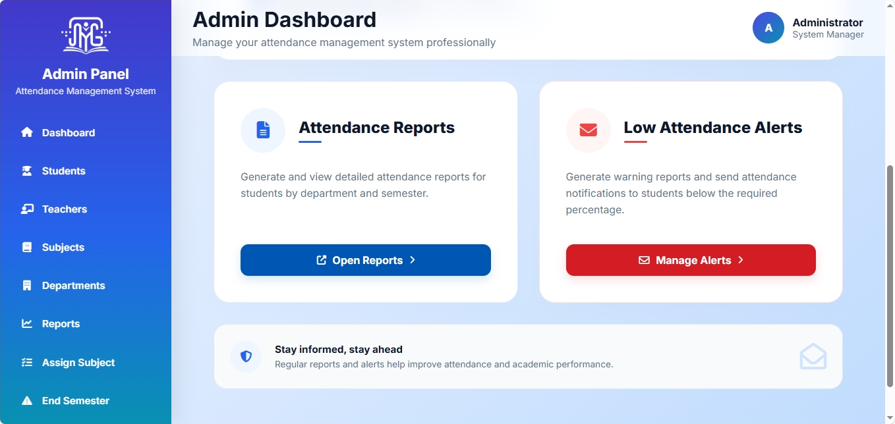
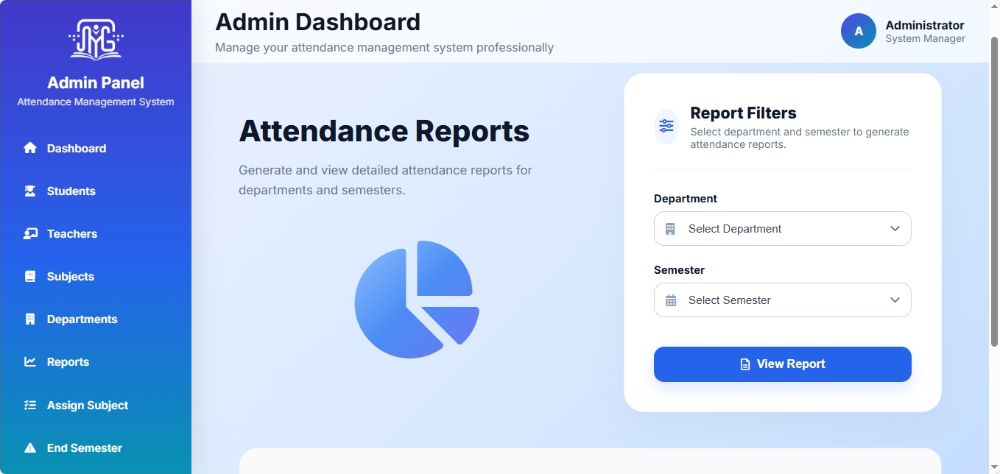
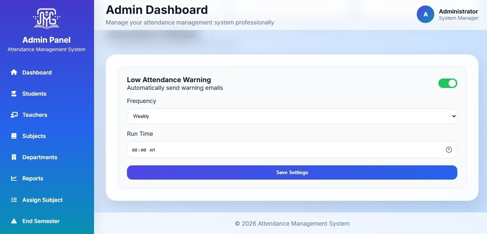
Teachers access structured workspaces mapped directly to their curricular roles, enabling rapid attendance collection and immediate submission.
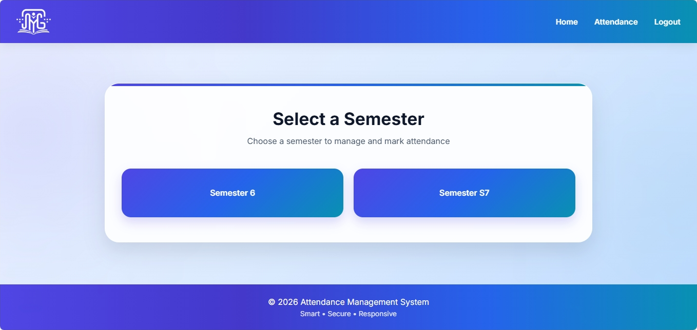
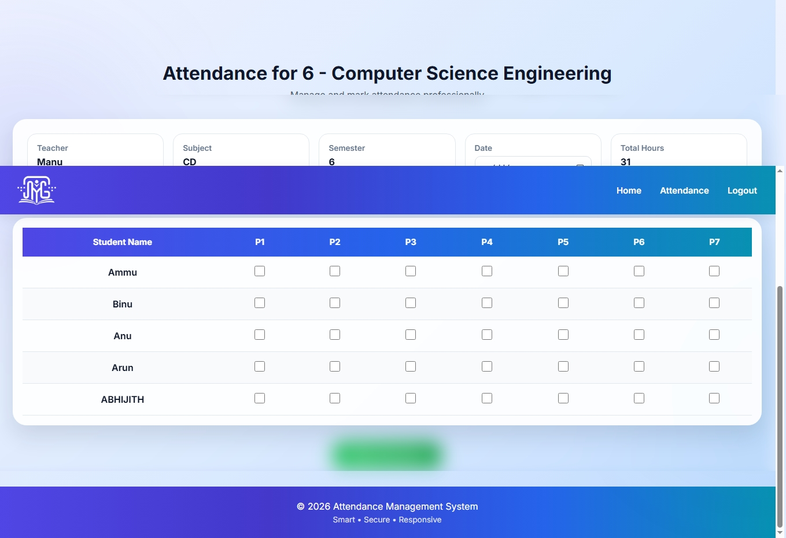
Students log into an interactive, read-only analytics portal to evaluate cumulative calculations, monitor performance metrics, and review attendance records.
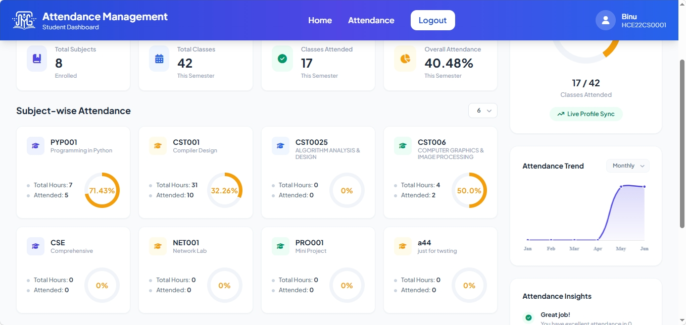
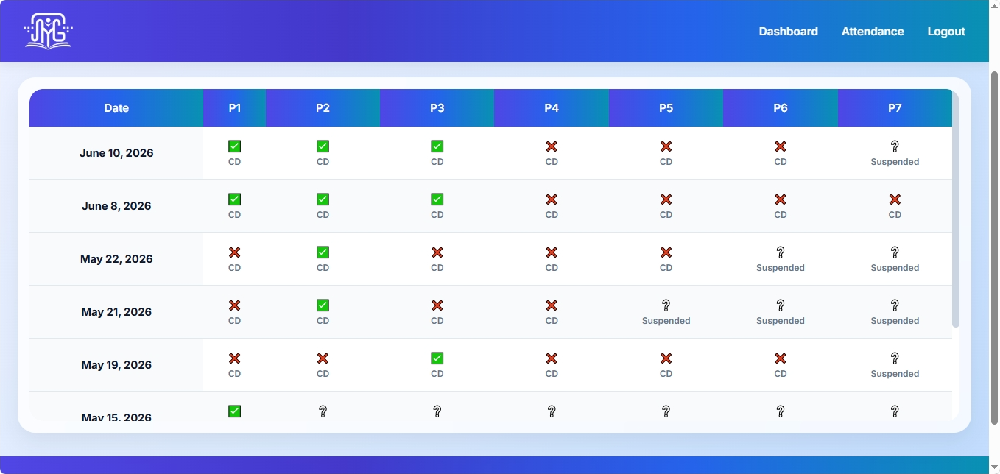
Core Structural Goals
“Eliminating paper friction, mitigating logging errors, and automating communication constraints across institutional structures.”